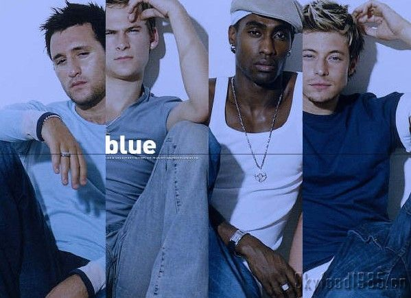
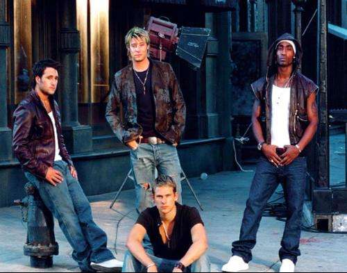
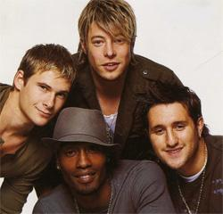

Blue
关于
成员
历程
歌曲
出道
单飞
回归
出道
2001年，一首饶富R&B曲风的“All rise”（《全体肃立》）终于让美国人明白，大洋彼岸的英国有一个Blue（“蓝色男孩”）组合，他们地道的美式黑人旋律、多切分音的强劲节奏、以及音乐中时尚流行元素（rap、hip-hop、funk）的融入，完全可以让世界感受美式黑人流行乐。 发迹于英国伦敦的BLUE由Duncan James、Antony Costa、Lee Ryan和Simon Webbe 4人所组成，2001年5月，Blue以一支饶富都会节奏感的All Rise，以平地一声雷之姿抢滩2001年初英国金榜Top 4，并高居点播榜Top10五周。接下来的Too Close及If You come Back2首单曲成绩更是惊人，不但均拿下排行冠军，在销量上也都有超过20万张的斩获。 随着一首首成功的佳绩，专辑All Rise也随着一波波越涨越高的气势，倒吃甘蔗般的在英国卖出了超过150万的销量，并在发行23周之后登上排行冠军的宝座。这张由天王制作人Stargate与摩城传奇Jimmy Ruffin之子Ray Ruffin携手打造、在英国及挪威两地完成的首辑中，展现了Blue超龄的声音演出，从让人狂放摇摆的All Rise、Fly By、This Temptation，到舒缓轻柔的Long Time、Best In Me，每首歌都让人对于Blue的超实力歌艺耳目一新。
单飞
back
然后，BLUE却急流勇退，于2005年宣布解散，四个男孩表示将各自单飞发展。刚刚在乐坛打造出自己一片天地的BLUE就这样宣布解散，令无数BLUE的粉丝倍感惋惜！ 虽然Blue仅存在三年就宣告解散，但无可否认，它是英国新世纪最成功的R&B偶像实力派男声团体。Blue由Duncan James（唐肯·詹姆斯）、Antony Costa（安东尼·柯斯塔）、Lee Ryan（李·瑞恩）和Simon Webbe（西蒙·韦伯）四个大男孩组成。四人中，只有Simon一人拥有黑人血统；Lee的年龄最小，最能把歌中的高音推向高潮；唐肯的嗓音最富有磁性；而安东尼的低音则让人回味无穷。
回归
back
休息4年的他们，再度以BLUE的身份重出江湖，首场公开表演献给了英国Capital FM电台，即2009年6月7日在ARSENAL球队所属球场Emirates Stadium举办的《Capital FM Summertime Ball夏日音乐高峰会》。 自2005年宣布“单飞不解散”后，各团员都致力于甩开偶像包袱，着重歌唱与合声的实力。对于这次合体复出，唐肯表示，“几周前我们聚在一起，聊了复出的计划，因此，面对4年后的重聚，非常开心！我想我们会更享受重聚后的时光！”黎则在旁边帮腔，“我们从未说过解散！不是吗？” 4年内都从男孩变奶爸的BLUE，日前在接受采访时宣布新的唱片合约已经签订，不过尚未公布花落谁家。